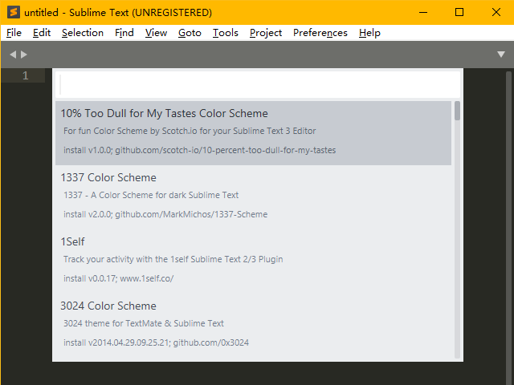
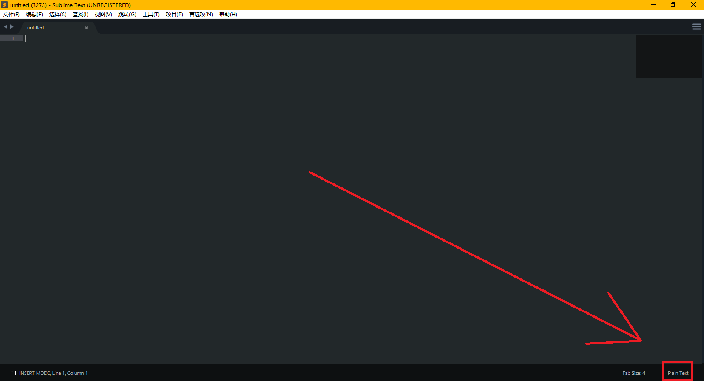

Sublime Text
简介¶
Sublime Text（以下简称 ST，后附数字作为版本区分，如无则各版本都适用）是一款轻量级的文本编辑器，支持多种语言的语法高亮及代码补全。具有高度的可拓展性以及 Vim 模式，特别的热启动模式大幅减小了文件丢失的可能。
新版 NOI Linux 中支持版本为 ST3 最后一个版本 3.2.21，故这里以 ST3 为主。目前 ST4 正式版已经发布2，现在如仍使用 ST3 会提示更新。
ST4 与 ST3 的重要差别会有额外补充，在介绍中如果提及某项在 ST3 已有翻译则使用中文，否则为 ST4 中的英文。
安装¶
直接前往 Sublime Text 3 官网 下载即可（中文官网 已经很久没有更新，另外还有一个仿冒的网站）。
ST 的安装包并不会创建桌面快捷方式，需要自己手动创建。
提示购买
ST 是收费软件，但有一个无限期的试用，试用并不会带来功能上的缺失，但会不时弹出弹窗提示激活。
插件与自定义¶
汉化¶
ST 并不支持中文，如需中文需要安装汉化插件。
安装插件管理器¶
打开 ST 后键入Ctrl+Shift+P唤出命令框，输入 Install 后回车（完整命令是 Install Package Control，不区分大小写），此时应该会看到左下角有一个 = 在不停的左右移动。Package Control 安装完成（或失败）后会有弹窗提示，具体的加载时间取决于网络。
如果完成的弹窗显示安装失败（与网络有关），则需要手动下载 Package Control 并将下载好的文件放到 ST 的数据目录下的 \Installed Packages 文件夹中。稍作等待，ST 会自动识别该插件（有时需要重启 ST）。
ST 数据目录的路径
Windows 下，如果在 ST 的 安装目录 下存在 \data 文件夹，会自动使用（或初始化）该文件夹作为数据目录。
ST3 的路径一般为 C:\Users\用户名\AppData\Roaming\Sublime Text 3，ST4 一般为 C:\Users\用户名\AppData\Roaming\Sublime Text，ST 会先寻找对应版本的路径，如不存在则寻找更低版本的路径，如都不存在则新建并初始化。
在以 NOI Linux 所使用的 Ubuntu 20.04.1 中，ST3 的数据目录为 $HOME/.config/sublime-text-3，ST4 的数据目录为 $HOME/.config/sublime-text，使用的具体规则同 Windows 环境。
可以使用 首选项->浏览插件目录... 快速查看数据文件夹路径下的 \Packages 文件夹。
安装汉化插件¶
再次按下Ctrl+Shift+P输入 Install 后回车（完整命令是 Package Contrl:Install Package），等待加载完成，接下来应该是这个界面：

输入 Chinese 选择 ChineseLocalizationgs 并回车，等待安装完毕，完成后界面会自动切换为中文（如是 ST4，因为汉化插件未更新，会少一些新增的菜单项，但一般对编辑无影响）。
调整字体¶
进入 首选项->设置，在右边的用户设置中的花括号中添加一行 "font_face": "字体名",，ST 的设置使用 JSON 格式储存。修改完成后保存，如果系统安装了对应字体会自动切换。
一般而言，如果单论对中文的显示的话，Microsoft Yahei Consolas 和 Microsoft YaHei Mono 是比较好的选择。
Warning
注意任何设置（包括插件设置）即使能也不要在左边的的默认设置中修改，这是不被推荐的，如果软件（或插件）更新，默认设置会被重置。
安装插件与主题¶
安装插件与主题的方法与安装汉化插件一致。
输入Ctrl+Shift+P输入 Install 后回车，然后搜索插件/主题/配色即可。
插件推荐：
- BracketHighlighter : 对原版的括号高亮进行了增强，必备。
- C++ Snippets : ST 自带有 C++ 代码补全，格式为大括号不换行。如果不习惯自带大括号换行的码风可以安装这个插件，同时增加了一部分补全。
- C++ 11 : 支持 C++ 11 标准高亮（ST4 中不需要）。
- SublimeAstyleFormatter : Astyle，用于格式化代码。
- Diffy : 按Ctrl+K&Ctrl+D即可快速比较第一视窗与第二视窗打开的文件的不同，比较方式为逐行比较。
- ConvertToUTF8 : 自动识别文件编码，并支持编码转换。
- SideBarEnhancements : 侧边栏增强，较为推荐。
- Transparency : 窗口透明化。
有其他需要可以尝试搜索。
一些主题：3
1337（单配色方案）、3024（单配色方案）、Grandson-of-Obsidian（单配色方案）、Seti_UI（单主题，额外包含 git 等格式的高亮，较为推荐）、Material Theme、Predawn、Agila、Materialize。
如果要编辑自己的配色方案，可以访问 tmTheme Editor。
如是 ST4 则可以在 Preferences->Customize Color Scheme 中调整配色方案或 Preferences->Customize Scheme 中调整主题。
开启 Vi Mode¶
ST 的开发者为 Vi 使用者提供了一个可选插件 Vintage，可模拟 Vi 的大部分功能。
开启方式¶
Vintage 插件默认是禁用的。可以通过 首选项->设置 在用户设置中，将 "ignored_packages" 一项中的 Vintage 删除并保存（不要整个删除，只删除 Vintage），ST 的状态栏左边就会出现 INSERT MODE，此时 Vintage 插件已开启。
或者按Ctrl+Shift+P，然后输入 Enable 选择 Package Control: Enable Package 并回车，选择 Vintage 即可，该方法需要 Package Control。
相关配置¶
如果想让上下左右键失效，可以在 首选项->快捷键设置 中添加：
1 2 3 4 | { "keys": ["left"], "command": ""},
{ "keys": ["right"], "command": ""},
{ "keys": ["up"], "command": ""},
{ "keys": ["down"], "command": ""},
|
如要使 ST 以命令模式启动，则可以在 首选项->设置 中添加：
1 | "vintage_start_in_command_mode": true,
|
也可以通过快捷键设置将进入命令模式设置成任意键（具体详见 修改插件）。
与 Vi 的不同¶
ST 的 Vintage 插件与 Vi 有一定不同，部分列于此处：
- 在插入模式下用选中不会进入可视模式，这时输入不会被识别为命令而是直接替换文本。可视模式只有命令模式下才能进入。
r、R、zA、za、zi、z=、@与使用[、]或"键的命令不存在。- 使用Ctrl、Shift和Alt键的快捷键会保留为 ST 设置的快捷键，如Ctrl+V不会进入可视模式而是正常粘贴。
- 命令行模式只保留了
:e、:0、:$、:s。 - 使用
\与?命令会自动唤出搜索框，而不是直接在命令中键入单词进行搜索。同时，数字将无法生效。 q宏录制命令会启动 ST 自带的宏录制，按Q后需要再按一个键启动录制，但录制的宏不会与该键绑定，需要按Ctrl+Shift+Q才能启动。如果需要保存，需要工具->保存宏，快捷键需要设置。- 无法使用
数字+.的组合。
设置¶
设置 ST¶
在 首选项->设置 中设置，这里列举部分较有用的选项：
1 2 3 4 5 6 7 8 9 10 11 12 13 14 15 16 17 18 19 20 21 22 23 24 25 26 27 28 29 30 31 32 33 34 35 36 | {
//字体大小
"font_size": 11,
//字体，可以不设置，默认为 Consolas
"font_face": "",
//Tab自动转换为空格
"translate_tabs_to_spaces": true,
//缩进宽度
"tab_size": 4,
//行高亮
"highlight_line": true,
//保存时自动在文件尾增加换行
"trim_trailing_white_space_on_save": true,
//在选择时查找自动只查找选择范围
"auto_find_in_selection": true,
//禁用了OI中不太可能用到的插件，可以自己调整
"ignored_packages": [
"ActionScript", "AppleScript", "ASP", "Batch File", "C#",
"Clojure", "CSS", "D", "Diff", "Erlang", "Git Formats",
"Go", "Graphviz", "Groovy", "Haskell", "HTML", "Java",
"LaTeX", "Lisp", "Lua", "Makefile", "Matlab",
"Objective-C", "OCaml", "Perl", "PHP", "Python",
"R","Rails", "RestructuredText", "Ruby", "Rust",
"Scala", "ShellScript", "SQL", "TCL", "Textile", "XML",
],
//相对行号，可配合 Vintage 插件快速跳转
"relative_line_numbers": false,
}
|
设置快捷键¶
在 首选项->快捷键设置 中设置，在左边找到需要修改的功能，然后复制到右边并修改按键即可。
例如，如果要把Ctrl+B的编译改为F9（如果不令原有的快捷键失效，实际是增加一个触发方式），则可以在 首选项->快捷键设置 中添加：
1 2 3 4 5 | //将build命令改为f9
{ "keys": ["f9"], "command": "build" },
//将原有的f9对应的行排序功能的快捷键改为shift+f9，由于大部分时候这个功能用不到，这一行也可以不添加
{ "keys": ["shift+f9"], "command": "sort_lines", "args": {"case_sensitive": false} },
|
设置插件¶
插件的设置可以在 首选项->Package Setting->插件名 中找到，做修改时请注意不要修改默认设置。
例如，这里给出 BracketHighlighter 的一些设置，在 首选项->Package Setting->BracketHighlighter->Bracket Setting 中修改：
1 2 3 4 5 6 7 8 9 10 11 12 13 14 15 16 17 18 19 20 21 22 23 24 25 26 27 | {
//在匹配的括号之间行的行首显示一条线，可以快速找到括号的范围
"content_highlight_bar": true,
//在小地图中显示匹配的括号
"show_in_minimap": true,
//忽略匹配范围限制
"ignore_threshold": true,
//style高亮样式，bold为块高亮，underline为加粗下划线，outline为外围一圈
//color为颜色，默认设置中已经包含了所有支持的颜色
//icon为在侧边栏显示的标志
"bracket_styles": {
"default": {"icon": "dot", "color": "region.yellowish", "style": "bold",},
"unmatched": {"icon": "question", "color": "region.redish", "style": "outline",},
"curly": {"icon": "curly_bracket", "color": "region.purplish",},
"round": {"icon": "round_bracket", "color": "region.yellowish",},
"square": {"icon": "square_bracket", "color": "region.bluish",},
"angle": {"icon": "angle_bracket", "color": "region.orangish",},
"tag": {"icon": "tag", "color": "region.orangish",},
"c_define": {"icon": "hash", "color": "region.yellowish",},
"single_quote": {"icon": "single_quote", "color": "region.greenish",},
"double_quote": {"icon": "double_quote", "color": "region.greenish",},
"regex": {"icon": "star", "color": "region.greenish",}
}
}
|
修改与添加¶
有时候，插件的某些地方可能并不尽如人意，或想对插件进行汉化，这时就需要对插件做一些修改。
插件存放的位置是数据目录下的 \Installed Packages 文件夹。
里面的文件以 .sublime-package 为后缀，实际上为 .zip 格式，可以使用解压缩软件打开。
例如，如果要修改自动补全，可以打开 ST 的 安装目录 \Packages\C++ 插件中的 \Snippets\*.sublime-snippet 文件修改，如要 增添 自动补全，可以安装 C++ Snippets 并在其中修改或添加文件（或新建一个插件，但不能直接添加进自带的 C++ 插件，否则无法被识别）。保存任何修改时 必须 关闭 ST，且请提前做好备份，否则可能出现文件丢失。
当然，任何增添都可以放在数据目录路径下的 \Packages\User\ 下，这总是被支持的。
例如，一个文件模板的补全可以这么写：
1 2 3 4 5 6 7 8 9 10 11 12 13 14 15 16 | <snippet>
<description>template_code</description> <!-- 这里的内容是补全内容的预览 -->
<content><![CDATA[#include <cstdio>
using namespace std;
int main() {
freopen("${1:file name}.in", "r", stdin);
freopen("$1.out", "w", stdout);
${0:/* code */}
fclose(stdin);
fclose(stdout);
return 0;
}]]></content>
<tabTrigger>code</tabTrigger> <!-- 这里的内容是补全的触发文本 -->
<scope>source.c++</scope> <!-- 这里的内容是补全适用语言 -->
</snippet>
|
以下列出部分文件后缀以及其用途，具体的插件开发教程详见 社区文档 和 官方文档：
| 后缀名 | 用途 |
|---|---|
| .sublime-build | 编译系统文件 |
| .sublime-completions | 文件名补全列表（一般为头文件） |
| .sublime-syntax | 语法高亮文件 |
| .sublime-settings | 设置文件 |
| .tmPreferences | 首选项中的列表文件 |
| .sublime-keymap | 快捷键设置文件 |
| .sublime-snippet | 代码补全文件 |
| .sublime-commands | 命令定义文件 |
| .sublime-menu | ST UI 文件，包括侧边栏以及顶部菜单栏（汉化的主要对象） |
由于插件更新会直接覆盖原文件，所以建议备份更改的文件。
编辑¶
设置语法¶
按Ctrl+Shift+P后输入语法即可，或者按右下角的 Plain Text 然后修改为需要的语言，同时在 视图->语法 中也可以设置。

快捷键¶
ST 有复合快捷键，如Ctrl+K&Ctrl+Backspace表示先按Ctrl+K再按Ctrl+Backspace。
部分快捷键：
| 按键 | 命令 |
|---|---|
| Ctrl+X | 剪切当前行 |
| Ctrl+Shift+K | 删除行 |
| Ctrl+Enter | 在下方插入行 |
| Ctrl+Shift+Enter | 在上方插入行 |
| Ctrl+Shift+Up | 行上移 |
| Ctrl+Shift+Down | 行下移 |
| Ctrl+L | 选择行，重复以向下选择多行 |
| Ctrl+D | 选择词，重复以选择多个相同词，并进入多重选择模式（用于快速批量更改） |
| Ctrl+M | 跳转到匹配的括号 |
| Ctrl+Shift+M | 选择括号内的内容（不包括括号），重复以包括括号 |
| Ctrl+K&Ctrl+K | 删至行尾（复合快捷键，建议使用 Vim 模式代替） |
| Ctrl+K&Ctrl+Backspace | 删至行首（复合快捷键，建议使用 Vim 模式代替） |
| Ctrl+] | 缩进当前（选择的）行 |
| Ctrl+[ | 取消缩进当前（选择的）行 |
| Ctrl+Shift+D | 复制当前行，并插入在下一行 |
| Ctrl+J | 合并下一行与当前行 |
| Ctrl+Shift+V | 粘贴并缩进（用于整段粘贴代码） |
| Ctrl+K&Ctrl+Shift+V | 从历史粘贴（复合快捷键，建议修改为Ctrl+Alt+V） |
| Ctrl+Alt+Down | 光标下移，并保留当前行光标（进入多重选择模式） |
| Ctrl+Alt+Up | 光标上移，并保留当前行光标（进入多重选择模式） |
| Ctrl+R | 跳至文件中的任意符号（函数或类型定义） |
| Ctrl+Shift+R | 跳至项目中的任意符号（函数或类型定义） |
| Ctrl+P | 跳至任意文件（曾经打开过或在项目中且存在的文件） |
| ~ | 转换选择内容的大小写 |
自动补全¶
ST 有丰富的补全功能，可能的补全内容会在光标下方显示，按Tab或Enter进行补全（ST4 中，如进行一个非 Snippet 类型的补全，接下来再按Tab可继续选择为以该补全为子串的补全）。
Snippet 类型的补全一般会有一些编辑块，补全后会自动选择为替换文本，如果是 for 等含有多个编辑块的复杂补全，编辑完成后再次按Tab完成下一个编辑块，此时要在编辑块中触发补全需要使用Enter（在 ST4 中可继续使用Tab）。
如果没有自动补全，请如下修复：
-
检查是否切换了语言，ST 默认新建文件为 Plain Text。
-
进入
首选项->设置然后添上两行：
1 2 | "auto_complete": true,
"auto_match_enabled": true,
|
多重选择¶
按住Ctrl并用鼠标单击即可在屏幕上增加光标，Ctrl+Alt+Up或Ctrl+Alt+Down可以在相邻两行直接增加光标，任何编辑性质的操作会同时应用至所有光标。
查找与替换¶
Ctrl+F为查找，F3为查找下一个Shift+F3为查找上一个，Ctrl+H为替换。
五个查找选项分别为正则表达式匹配、大小写敏感、全字匹配、循环查找、在选段中查找。
建议在首选项中将 "auto_find_in_selection" 设置为 true。这样在选择超过一个词时使用查找会自动只在选段中查找。
演示¶
热启动¶
尝试在 ST 中键入一些内容，并直接把整个 ST 关闭，ST 会直接关闭且没有任何提示，再打开 ST 时只要不对电脑进行数据还原就不会丢失任何数据。
多重选择¶
如果要把以下代码中的所有 bok 改为 book，只需将光标放置在任意一个 bok 中，长按Ctrl+D即可快速选中。
1 2 3 4 | int check() {
book[1] = 1, book[2] = 1, book[3] = 1, bok[1] = 1, bok[2] = 1, bok[3] = 1,
bok[4] = 1, bok[5] = 1;
}
|
如果要将下列文件中的所有等号后面改成 "good"，只需在将光标放置于第一行的 aaa 前，并按五次Ctrl+Alt+Down，再然后按下Ctrl+D并键入 good 即可。
或选中 "a 并按住Ctrl+D，然后按Right、Ctrl+D，之后键入即可。
1 2 3 4 5 6 | s[1] = "aaa";
s[2] = "aab";
s[3] = "aac";
s[4] = "good";
s[5] = "aae";
s[6] = "aaf";
|
如要为下列所有 a + b 加上括号，只需选择一个 a + b，按住Ctrl+D并键入(即可（如选择一定区域，则任意左括号键入会为该区域两边添加匹配的括号）。
1 | a + b*a + b*a + b
|
查找与替换¶
如果要将下列文件中的所有等号后面改成 "good"，也可以用Ctrl+H使用替换，打开正则，输入 ".*"，并替换成 "good" 即可。
1 2 3 4 5 6 | s[1] = "aaa";
s[2] = "aab";
s[3] = "aac";
s[4] = "good";
s[5] = "aae";
s[6] = "aaf";
|
如要为以下代码添加分号，只需使用选择区域替换，打开正则，输入 \n，并替换成 ;\n 即可。
1 | int main() { int a, b cin >> a >> b cout << a + b return 0}
|
宏录制¶
如要为以下代码添加分号，可以按Ctrl+q启动宏录制接下来依次按End、;、Down再按Ctrl+q结束宏录制（中途左下角不会全程显示正在录制，但确实在录制），接下来重复Ctrl+Shift+q即可。
1 2 3 4 5 6 | int main() {
int a, b
cin >> a >> b
cout << a + b
return 0
}
|
如已开启 Vintage 插件
执行一次Ctrl+Shift+q后，可以Esc进入命令模式，输入 .. 即可（. 命令可以重复 ST3 命令）
关于宏的保存与绑定按键详见 社区文档。
编译与运行¶
ST 的编译环境已经配置好了，可以直接使用。
Windows 环境下需要将 g++ 所在目录添加到环境变量中，并重启 ST。
编译¶
直接按Ctrl+B编译，第一次使用会需要选择编译系统，选择 C++ Single File（编译）或 C++ Single File - Run（编译并运行）。
修改编译选项¶
ST 默认的编译选项为 g++ "${file}" -o "${file_path}/${file_base_name}"，如果要修改编译选项，可以新建一个编译系统。
进入 系统->编译系统->新建编译系统… 然后在大括号中间输入：
1 2 3 4 5 6 | //编译选项可以自己调整
"cmd": ["cmd","/c","g++","-Wall","${file}","-o","${file_path}/${file_base_name}"
,"&&","cmd","/c","${file_path}/${file_base_name}"], //这部分为运行
//这一行可以让ST3图形化显示报错，如果习惯了看g++返回的信息可以去掉
"file_regex": "^(..[^:]*):([0-9]+):?([0-9]+)?:? (.*)$",
|
保存后按Ctrl+Shift+B切换编译系统就可以使用了，这里的配置是编译并在外部 CMD 运行。
保存的文件为数据目录路径下的 \Packages\User\编译系统名.sublime-build 可以反复修改。
运行¶
如果编译时选择 C++ Single File - Run（即编译后运行）或配置了自动运行，那么在下方弹出的编译信息窗口应该不会有任何显示（除非编译错误），因为 ST 的编译信息窗口实际上是一个终端，可以直接输入数据。
运行结束后会提示程序的运行时间，其计时为从按下Ctrl+B到全部 CMD 命令运行结束的时间，也就是说包括编译的时间和输入的时间，以及如果在外部 CMD 运行还包括 CMD 开启关闭的时间。
Warning
这个窗口无法输入F6或Ctrl+Z，如果运行读入到文件末尾的程序请使用文件输入，或配置在外部 CMD 运行。
调试¶
可以安装插件使 ST 支持图形化 gdb 调试，但不建议依赖插件进行 gdb 调试。
更好的做法是在配置编译系统时加上相关命令启动 gdb，在外部进行命令行调试。
杂项¶
- 把文件夹拖进 ST 中并按Ctrl+K&Ctrl+B开启侧边栏，从而快速切换文件。
- 善用跳转功能，尤其是Ctrl+P进行文件间跳转与Ctrl+R进行函数跳转。
- ST 支持 git4。
- ST 的所有配置储存在数据目录下，可以随意打包，但注册信息无法在多台电脑上使用。
外部链接¶
参考资料与注释¶
build本页面最近更新：，更新历史
edit发现错误？想一起完善？ 在 GitHub 上编辑此页！
people本页面贡献者：OI-wiki
copyright本页面的全部内容在 CC BY-SA 4.0 和 SATA 协议之条款下提供，附加条款亦可能应用